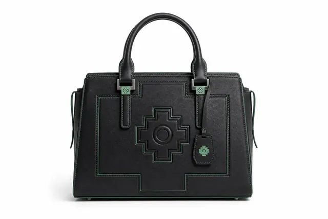
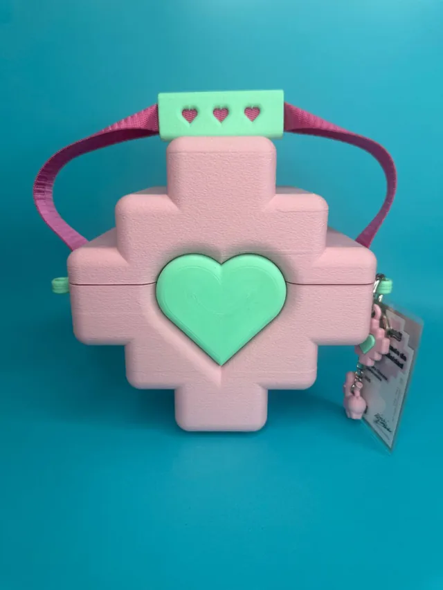

Llamicornios · Cartera Chacana
La llama andina se encuentra con el unicornio pop. Carteras, fósforos, juguetes y piezas de colección bajo un mismo universo gráfico.
Personaje · ProductoLima · Perú · Desde 2009
Peruano con raíces chinas y japonesas. Diseño personajes que mezclan iconografía andina con estética pop japonesa —y los llevo del dibujo al objeto, del objeto al metaverso.
 Llamicornios
Toy design
Llamicornios
Toy design
La llama andina se encuentra con el unicornio pop. Carteras, fósforos, juguetes y piezas de colección bajo un mismo universo gráfico.
Personaje · Producto
Chullo + Llamicornio. La pieza que llegó a la premiere de Minecraft en México y usó Jason Momoa.
Wearable
Edición limitada. La marca saliéndose del empaque para volverse objeto cotidiano.
Packaging
Intervención de objetos y metal con iconografía precolombina. Artesanía llevada a un lenguaje contemporáneo.
Objeto · Arte
La cruz andina como estructura de bolso. Forma, color y volumen pensados para producción local.
Accesorio
Gracias a Phillip Chu Joy, la pieza llegó a la premiere de Minecraft en México y la usó Jason Momoa. Un pedazo de Perú en el centro de un estreno global.

Todo empieza con un personaje: una llama con cuerno. Se define su gramática —ojos, hocico, cuerno, patas— y desde ahí se deriva todo lo demás: estampados, carteras, fósforos, juguetes, ropa.
La regla es simple: si el personaje no se reconoce a 1 cm, no funciona. Por eso el sistema se prueba en escala pequeña antes de saltar a producto.

Gestión cultural dentro de Minecraft: museos, exposiciones y experiencias construidas bloque a bloque. El Museo Submarino en Máncora y Perú en la Antártida son dos de esos proyectos.
No es un juego: es un espacio expositivo con público, curaduría y producción. Y permite llevar una muestra a lugares donde no hay sala.
01
Creación de personajes con identidad cultural, universo visual y aplicaciones de producto.
02
Campañas, lookbooks y sistemas visuales para marcas que quieren salir del molde.
03
Diseño de objetos, modelado e impresión 3D, del prototipo a la producción corta.
04
IA aplicada, diseño digital y metodologías creativas para universidades y equipos.
1
Referencias, archivo y contexto. De dónde viene la imagen y a quién le habla.
2
Personaje, paleta, tipografía y reglas. Un sistema que aguanta crecer.
3
Piezas, objetos y mundos. Del archivo digital a la calle y al metaverso.



Diseñador gráfico, diseñador de juguetes, gestor cultural digital en Minecraft, bailarín de locking y creador de los Llamicornios. Mi trabajo parte de mi identidad: peruano con raíces chinas y japonesas.
Más de diez años fusionando cultura e iconografía peruana con estética pop japonesa. Más de 40 exposiciones en Perú, Chile, México, España, Bélgica, Japón y Argentina.
Doy clases en la Universidad del Pacífico, Chío Lecca y SISE. Ahí aprendí que explicar lo que hago vale tanto como hacerlo.
Latin American Design Awards 2015 · Nikon Photo Contest 2013 (3.er puesto internacional) · Toulouse Lautrec Imagen 2011 (1.er puesto).
Personajes, campañas, producto o una clase. Cuéntame qué tienes en mente y te digo si soy la persona.